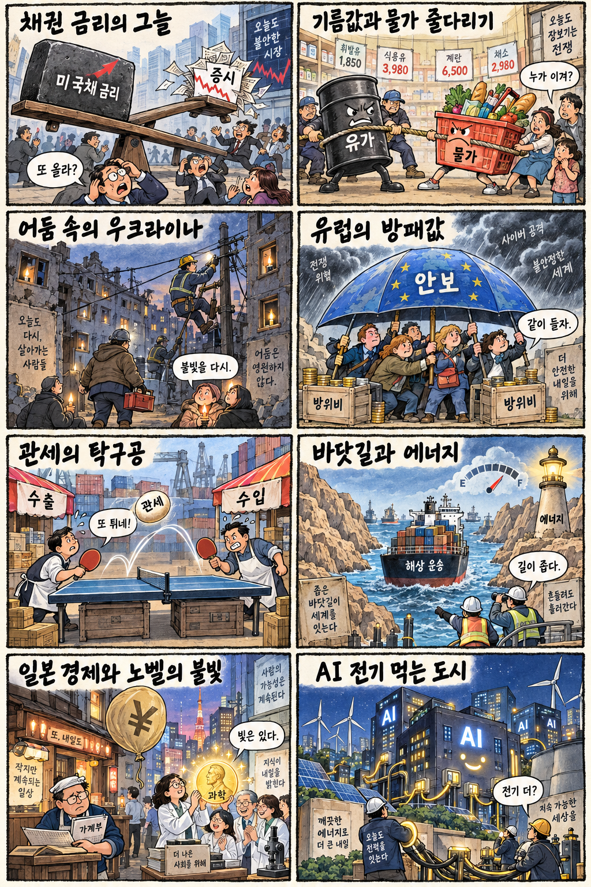
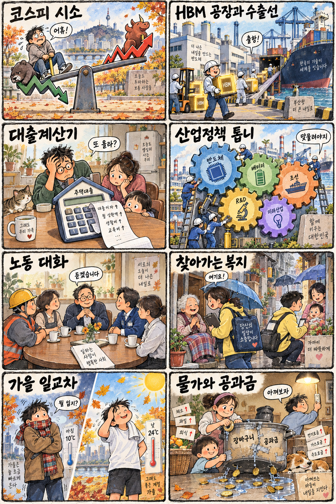

01
액센츄어 · 197.73→208.36달러 · +5.38%
내용요약 시가 대비 +5.38%로 조사 종목 중 가장 강한 흐름을 보였습니다.
예상여파 기업 인공지능 도입 서비스의 장기 수요 기대를 지지하지만 단일 거래일 움직임을 국내 관련주의 직접 촉매로 확대 해석하지 않아야 합니다.
MORNING_BRIEFING_20261009
작성 시각: 2026-10-09 06:37 KST · 직전 미국 정규장과 2026-10-09 KST 당일 공개 기사 기준
직전 미국 정규장인 10월 8일 뉴욕증시는 다우 +0.10%, S&P 500 -0.47%, 나스닥 -1.25%로 엇갈렸습니다. 인공지능 투자 수익성 우려와 반도체 매도가 기술주를 눌렀고, 중동 긴장에 따른 유가 상승은 물가·금리 부담을 키웠습니다. 한국 증시는 한글날 휴장으로 즉시 반영되지 않으며 다음 개장일에는 반도체 약세, 유가와 환율의 누적 영향을 확인해야 합니다.
| 지수 | 종가 | 등락률 | 한국 증시 시사점 |
|---|---|---|---|
| 다우존스 | 51,231.64 | +0.10% | 유가·금리 부담 속 방어주 상대강도 시사 |
| S&P 500 | 7,765.36 | -0.47% | 유가·금리 부담 속 방어주 상대강도 시사 |
| 나스닥 종합 | 27,193.34 | -1.25% | AI 수익성 우려와 반도체 매도는 국내 기술주에 부담 |
인공지능 수익성 우려와 반도체 매도로 기술주 낙폭이 컸습니다.
중동 긴장과 공급 차질 우려가 물가·금리 부담을 키웠습니다.
전날 -2.62% 하락했고 시가 대비로도 -2.68% 밀렸습니다.
공식 추천 없이 다음 개장일의 갭과 누적 해외 변수를 관찰합니다.
10월 8일 보고서는 공식 추천을 내지 않았습니다. 게시 당시 판단을 유지하며 사후 종목을 추가하지 않습니다.
| 시장 | 종가 | 등락률 | 기준 |
|---|---|---|---|
| KOSPI | 6,625.93 | -2.62% | 10월 8일 정규장 · 시가 대비 -2.68% |
| KOSDAQ | 892.27 | -0.69% | 10월 8일 정규장 · 시가 대비 -0.66% |
| 다우존스 | 51,231.64 | +0.10% | 미국 10월 8일 정규장 |
| S&P 500 | 7,765.36 | -0.47% | 미국 10월 8일 정규장 |
| 나스닥 종합 | 27,193.34 | -1.25% | 미국 10월 8일 정규장 |
액센츄어는 시가 대비 +5.38%로 조사 종목 중 가장 강했습니다.
홈디포 +3.84%로 기술주 약세 속 방어적 상대강도를 보였습니다.
오라클은 시가 대비 -4.57%로 인공지능 투자 수익성 우려에 민감했습니다.
마이크론 -3.86%, AMD -2.90%, 브로드컴 -2.86%로 동반 약세였습니다.
내용요약 시가 대비 +5.38%로 조사 종목 중 가장 강한 흐름을 보였습니다.
예상여파 기업 인공지능 도입 서비스의 장기 수요 기대를 지지하지만 단일 거래일 움직임을 국내 관련주의 직접 촉매로 확대 해석하지 않아야 합니다.
내용요약 시가 대비 +3.84%로 기술주 약세 속 소비·주택개선 대형주의 상대강도가 돋보였습니다.
예상여파 미국 소비 둔화 우려를 일부 완충하지만 주택금리와 실제 매출 추세를 함께 확인해야 합니다.
내용요약 시가 대비 +2.29%로 유가 급등 국면에서 에너지 생산주가 강했습니다.
예상여파 정유·에너지 업종에는 우호적이나 유가 급등은 국내 운송·화학 비용과 물가에는 부담입니다.
내용요약 시가 대비 -4.57%로 조사 종목 중 낙폭이 가장 컸고 인공지능 투자 수익성 우려가 부각됐습니다.
예상여파 고평가 클라우드·데이터센터 종목의 변동성이 국내 성장주로 번질 수 있습니다.
내용요약 시가 대비 -3.86%로 최근 강세 뒤 반도체 매도 압력을 크게 받았습니다.
예상여파 국내 메모리 투자심리에 부담이지만 장기 업황과 하루 가격 움직임은 구분해야 합니다.
한글날 국내 증시는 휴장입니다. 미국 나스닥과 반도체의 하락, 국제유가 급등은 다음 개장일 성장주·운송·화학에 부담이 될 수 있는 반면 에너지·방어주는 상대적으로 견조할 수 있습니다. 전날 KOSPI는 시가 대비 -2.68%, KOSDAQ은 -0.66%였으므로 휴장 중 누적된 미국 반도체, 유가·환율과 외국인 선물 흐름을 개장 전에 다시 확인해야 합니다.
오늘은 추천 없음 — 현금 관망
한글날 국내 증시 휴장으로 당일 시가 진입, 호가 유동성 및 장중 수급을 검증할 수 없습니다. 종합점수 75점·상승확률 60%·예상 손익비 1.5를 동시에 검증할 수 없어 공식 후보를 제시하지 않습니다.
관심 연결종목 메모리·에너지·전력 인프라는 다음 개장일 관찰 대상일 뿐 매수 추천이 아닙니다. 휴장 중 누적 뉴스로 예상 갭이 커질 수 있으므로 추격매수하지 않습니다.
국내 현물시장 거래가 없어 다음 개장일 갭 위험을 점검합니다.
중동 군사 긴장과 허리케인 공급 차질이 이어지는지 봅니다.
마이크론·AMD·브로드컴 매도 압력의 지속 여부를 확인합니다.
관세발 물가와 유가 상승이 국채금리에 미치는 영향을 봅니다.
핵심 요약: 인공지능 경쟁의 무게중심이 칩 공급에서 전력·로컬 기기·산업 로봇·보안으로 확장되고 있습니다. 메모리 가격 상승은 실적을 지지하지만 미국 기술주 조정 속에서 계약과 실제 수익성을 우선 확인해야 합니다.
내용요약 인공지능 반도체 공장의 경쟁력이 생산 장비뿐 아니라 전력 공급과 에너지 최적화 능력에 달렸다는 당일 보도입니다. 전력 품질과 냉각 효율이 수율·가동률의 핵심 변수로 부상했습니다.
예상여파 반도체·데이터센터 투자에서 전력기기와 에너지 관리 수요가 동반 확대될 수 있지만 실제 설비 발주와 매출 인식 시점을 확인해야 합니다.
내용요약 마이크로소프트와 엔비디아가 고성능 인공지능 연산을 로컬과 클라우드에서 나눠 처리하는 노트북을 공개했다는 당일 보도입니다.
예상여파 온디바이스 인공지능 생태계 확장에는 긍정적이나 가격대, 배터리 효율과 실제 응용 프로그램 보급 속도가 수요를 좌우할 수 있습니다.
내용요약 D램과 HBM 가격 상승으로 삼성전자의 연간 이익 규모가 커질 수 있다는 당일 보도입니다. 메모리 공급 제약과 인공지능 수요가 업황을 지지하는 흐름입니다.
예상여파 국내 반도체 실적에는 우호적이지만 전날 주가 급락과 높은 기대치를 고려해 계약가격·출하량·고객 인증을 분리해 봐야 합니다.
내용요약 서울의 물류·재난 현장에 사람을 돕는 로봇을 적용하려는 구상이 소개된 당일 보도입니다. 서비스 로봇의 실증 범위가 일상 공간으로 넓어지고 있습니다.
예상여파 센서·감속기·소프트웨어 수요가 늘 수 있으나 안전 인증, 유지비와 현장별 경제성 검증이 상용화 속도를 결정할 전망입니다.
내용요약 금융권 망분리 완화 신청 대상이 확대되는 가운데 연이은 해킹 사고로 보안 검증의 중요성이 커졌다는 당일 보도입니다.
예상여파 금융 인공지능 활용은 빨라질 수 있지만 접근권한, 데이터 유출 방지와 사고 책임 체계가 선행되지 않으면 규제 리스크가 커질 수 있습니다.
핵심 요약: 중동 긴장과 유가 급등이 금융시장과 물가를 압박했고 관세 비용의 소비자 전가도 부각됐습니다. 우크라이나 민간 피해와 제조업 과잉공급 대응은 안보·통상 불확실성이 장기화하고 있음을 보여줍니다.
내용요약 미국 국무장관이 우크라이나 전쟁을 위험한 교착 상태로 평가한 가운데 러시아 폭탄으로 버스가 피격돼 다수의 사망자가 발생했다는 당일 보도입니다.
예상여파 민간 피해와 보복이 이어지면 휴전 협상은 더 어려워지고 유럽의 방위비·에너지·곡물 운송 불확실성이 장기화할 수 있습니다.
내용요약 뉴욕연방준비은행 분석에서 미국 관세가 소비재 물가를 2.9%포인트 높였다는 당일 보도입니다. 관세 비용의 소비자 전가가 수치로 부각됐습니다.
예상여파 미국 물가와 금리 인하 경로에 부담이 될 수 있으며 수입 의존 업종의 마진과 글로벌 교역량에도 압력이 이어질 수 있습니다.
내용요약 미국 등 14개국과 유럽연합이 제조업 과잉생산에 공동 대응하는 협의체를 구성했다는 당일 보도입니다.
예상여파 철강·화학·배터리 등 공급과잉 업종의 무역장벽이 높아질 수 있어 한국 수출기업도 원산지와 보조금 규정 변화에 대비해야 합니다.
내용요약 중동 긴장과 미국 허리케인에 따른 공급 우려로 국제유가가 약 4% 급등했다는 당일 보도입니다.
예상여파 운송·항공·화학의 비용 부담과 물가 압력이 커질 수 있으며 에너지 생산주는 상대적 수혜를 받을 가능성이 있습니다.
내용요약 미국 국방부가 이란을 겨냥한 대규모 군사작전 준비를 지시했다는 당일 보도입니다. 호르무즈 해협과 원유 운송 위험이 다시 부각됐습니다.
예상여파 충돌 현실화 여부에 따라 유가·해운·환율 변동성이 확대될 수 있어 공식 발표와 실제 병력 이동을 구분해 확인해야 합니다.

핵심 요약: 녹색전환과 개방형 인공지능 협력이 산업정책의 축으로 부상한 가운데 국제 과잉공급 대응과 지역 내수 부진이 동시에 제기됐습니다. 한글날에는 포근하지만 큰 일교차에 유의해야 합니다.
내용요약 정부가 2035년까지 대규모 자금을 투입하는 한국형 녹색대전환 전략을 추진한다는 당일 보도입니다. 산업 탈탄소와 에너지 전환을 함께 묶는 계획입니다.
예상여파 전력망·효율화·저탄소 설비 수요에는 우호적이나 재원 조달, 세부 사업 선정과 민간 투자 유인책의 실행력이 중요합니다.
내용요약 국내 인공지능 기업 14곳이 AMD 생태계와 연대해 고비용 인프라와 특정 공급자 의존을 낮추려 한다는 당일 보도입니다.
예상여파 국내 소프트웨어·서버 선택지가 넓어질 수 있지만 실제 호환성, 고객 도입과 매출 계약이 확인되기 전에는 기대를 실적으로 단정하기 어렵습니다.
내용요약 한국을 포함한 주요국이 제조업 과잉생산 문제에 공동 대응하는 국제 협의체를 구성했다는 당일 보도입니다.
예상여파 국내 철강·화학·배터리는 덤핑 방어 기회를 얻을 수 있지만 수출 규정과 통상 마찰이 동시에 늘어날 가능성이 있습니다.
내용요약 대구·경북 지역에서 내수 소비와 물가는 부담이지만 수출은 상대적으로 호조라는 당일 지역경제 보도입니다.
예상여파 수출 제조업과 생활경제의 온도차가 이어질 수 있어 고용·소비 회복과 중소기업 비용 부담을 함께 점검해야 합니다.
내용요약 한글날인 오늘 전국이 대체로 포근하되 아침은 쌀쌀하고 일교차가 15도 안팎으로 크다는 당일 예보입니다.
예상여파 나들이에는 무난하지만 얇은 겉옷을 준비하고 건조한 지역의 화재와 호흡기 건강에 유의해야 합니다.
